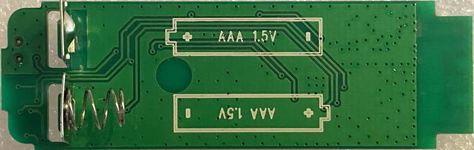
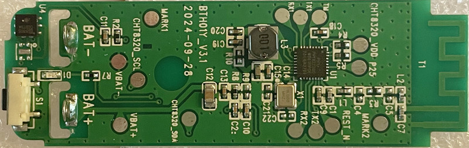
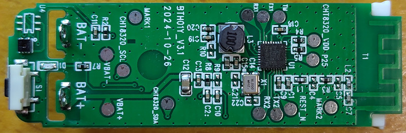
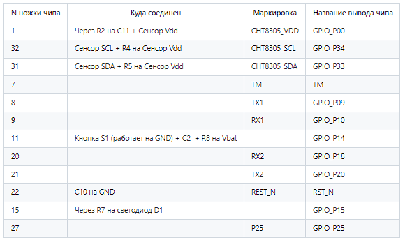

BTH01: Tuya BLE
Bloetooth Temp & Humidity Sensor, Model: BTH01
Not recommended to purchase if CHT8305 sensor is installed!Battery usage is limited to 2.5V due to the CH8305 sensor.
Не стоит выбирать для покупки. если установден сенсрор CHT8305, т.к. использование батареи будет ограничено 2,5 В из-за датчика.

Custom firmware for working in BTHome format
$1.9
SoC: PHY6222QC W04, Q: 16MHz, Sensor: CHT8305




Option with a normal sensor:

Соединения на печатной плате:

FullFlash bin (Tuya ver)